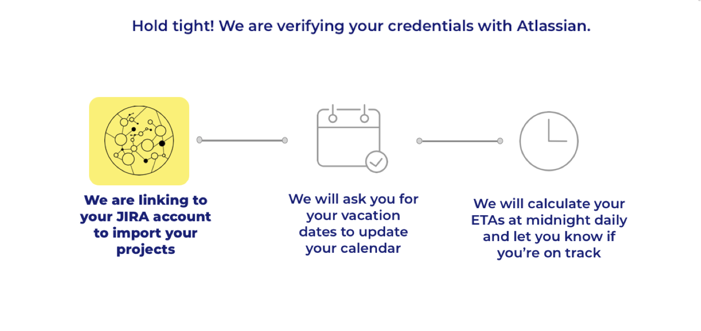

<div [style.display]="tutorial_display" id="tutorial-overlay">
    <div class="img-wrapper">
        
        <div>
            <button (click)="hideTutorial()" class="new-font" mat-raised-button color="accent" id="back-button">X</button>
        </div>
        <div>
            <button [disabled]='redirect_button_disabled' [routerLink]="['/projects']" mat-raised-button color="primary" class="new-font" id="continue-button">Continue to Projects</button>
        </div>
    </div>
</div>

<h1 style="text-align: center; font-size: 32px;" class="julius-font">Task Management Systems accounts</h1>
<h2 id="testing" style="text-align: center; font-size: 20px;" class="julius-font">{{testvar}}</h2>

<div class="tms-links-container-wrapper">
    <div class="tms-links-container" fxLayout="row wrap"  fxLayoutAlign="space-evenly start">
    <!-- fxLayoutGap="0.5%" -->
        <div class="alert alert-info new-font" style="text-align: center; font-size: 32px;" *ngIf="parsing_projects.size > 0">Great success! New account(s) (id <span *ngFor="let project_tms of parsing_projects">{{project_tms}}</span>) are linked. Discovering projects... This may take a few minutes. Will redirect to projects when done. {{ parsing_logs }}</div>

        <app-tms-card *ngFor="let tms_i of tmss" [tms]="tms_i"></app-tms-card>
        <div style="text-align: center; font-size: 32px;" *ngIf="!loaded_data">Loading...</div>

        <div style="text-align: center; font-size: 32px;" *ngIf="loaded_data && c_isEmpty(tmss)">No accounts added yet.</div>
        <div class="add_button_container">
            <mat-icon color="primary" [routerLink]="['/tms_connect']" class="add_button"  matTooltip="Connect another account">add_circle</mat-icon>
        </div>
    </div>
</div>